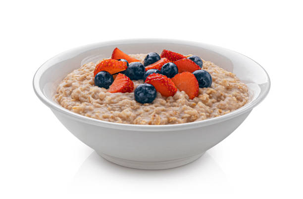

Oatmeal Recipe

Description
Oatmeal is a delicious, easy, nutritious breakfast. You can make it at
home, in the office, or wherever you can access water and a microwave. I
eat oatmeal everyday.
Ingredients
- Quick Oats
- Water or Milk
- Sugar or Sweetener
- Peanut Butter (or PB Fit)
- Cinnamon
- Berries
Directions
- Put oatmeal in bowl.
- Pour liquid into bowl.
- Microwave for two minutes.
- Mix in all dry ingredients.
- Add a touch more water.
- Microwave for 30 seconds.
- Enjoy!